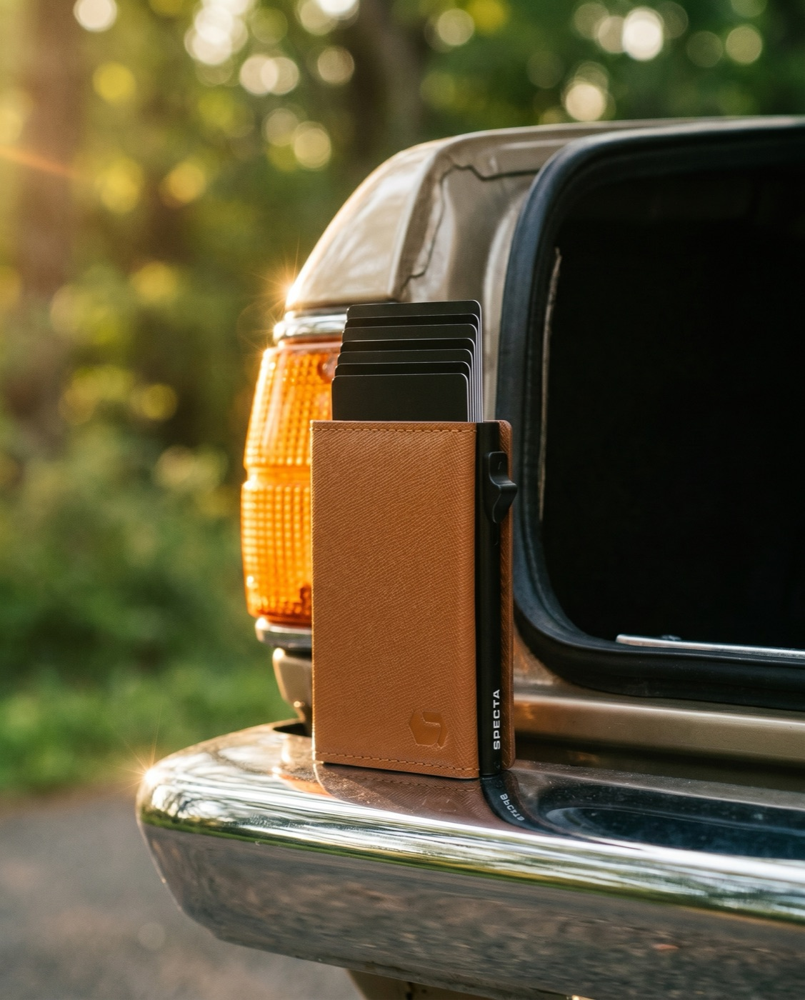
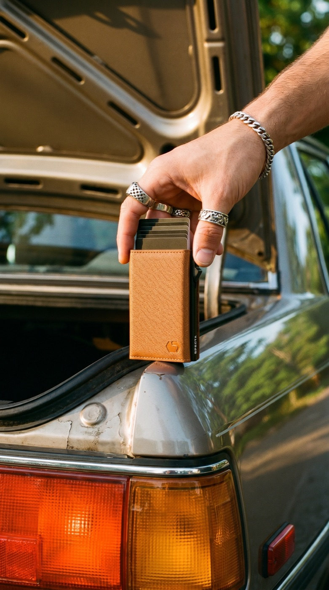
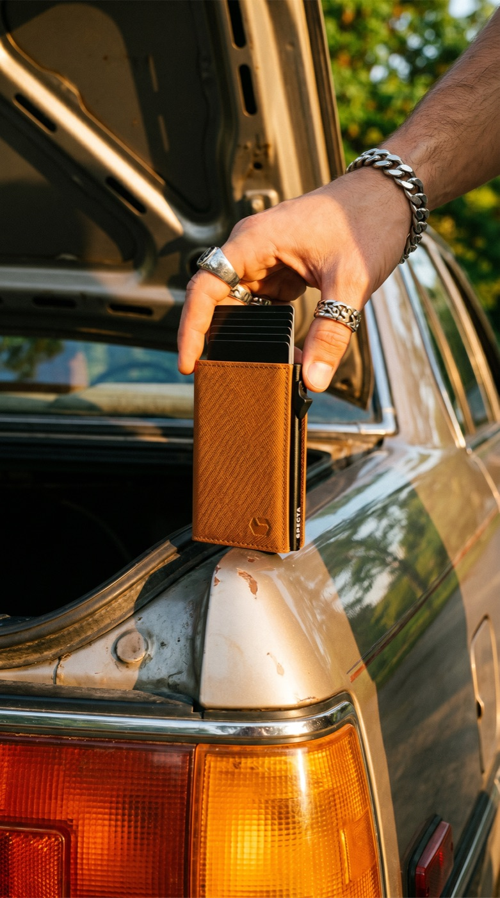
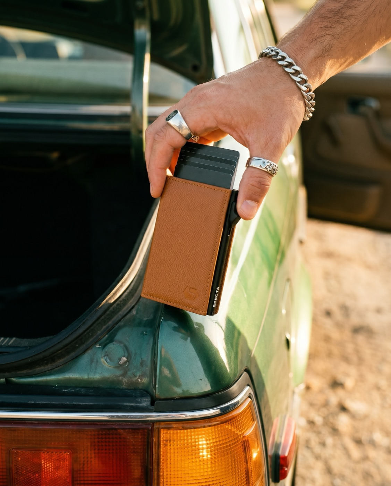
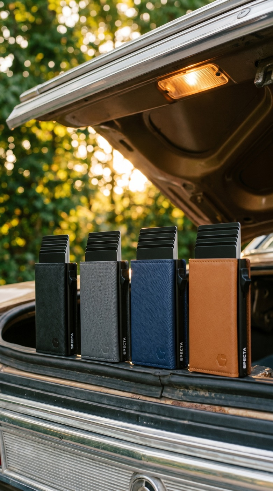
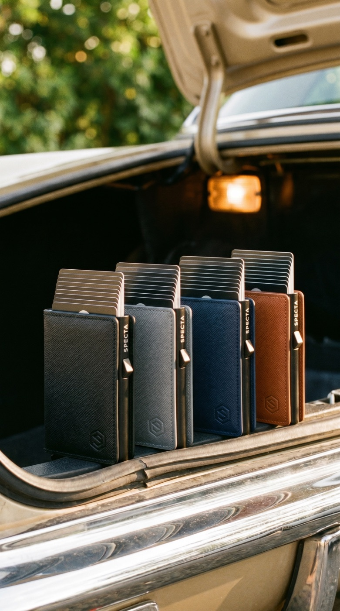

Generated from the inspo-2 Pinterest scenes · nano_banana_pro · 2k · logo-locked
SPECTA in the wild — scene series v2
The real product dropped into the saved reference scenes — car-trunk hero plus single- and multi-colour setups, now in both 4:5 and 9:16. This pass fixes the earlier notes.
Fixed: no phantom black ledge under the walletFixed: believable hand anatomy & gripFixed: wallet body matches the real productAdded: 9:16 versions
★ = standout. Tags mark aspect ratio. All files in series/.
● Car trunk — the hero scene · from IMG_4052 · ledge removed, hands fixed
★ BEST4:5

Single on the trunk lipcognac · sun-star · SPECTA rail crisp
★9:16

Trunk hold — cognachand grip · A
9:16

Trunk hold — cognachand grip · B
4:5

Trunk hold — cognacgreen car variant
★ ALL 49:16

Trunk line-up — 4 colourstrunk-light glow · A
9:16

Trunk line-up — 4 coloursB
● Multi-colour studio · float IMG_4058 · stack IMG_4057